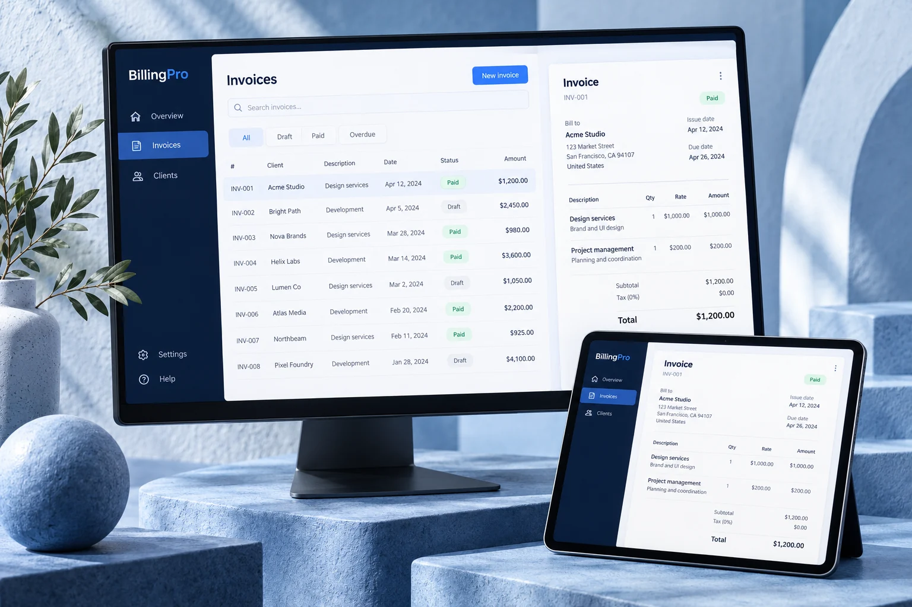

Connecting the work behind an invoice.
A company workspace where invoices, payments, stock movements, and purchase orders belong to the same operational workflow.

- Project
- SaaS · Billing and operations
- Engineering focus
- Tenant-aware data access and business workflows
- Technology
- React · Node.js · Express · SQLite · Razorpay · Docker
The problem
An invoice is only one part of running a business. A payment changes its balance, settlement can affect stock, and a purchase order eventually replenishes inventory. Building these as unrelated screens makes it difficult to keep the underlying records consistent. A shared application also needs to keep one company's operational data separate from another's.
The approach
BillingPro uses a React client backed by versioned Express endpoints, domain services, and SQLite repositories. Company identifiers travel through the data-access layer. Invoice, payment, inventory, and procurement services model the connected workflows, with scheduled jobs for recurring invoices and overdue reminders.
- Select a company workspace
- Create a GST-aware invoice
- Record or collect payment
- Update stock and ledger
- Review reports and follow-ups
Key decisions
Carry tenant context into data access
Repository queries accept a company identifier, while API middleware handles authentication and roles. Keeping tenant context close to database operations makes the separation visible beyond the interface.
The tradeoff. Every new query and workflow must preserve that context; a company selector alone is not an isolation boundary.
Keep business rules in domain services
Separate services handle invoices, payments, stock, and procurement rather than putting each workflow entirely inside a route handler. The payment service also enriches invoice references in one query instead of looking them up individually.
The tradeoff. More layers introduce additional contracts, but provide clearer places to manage connected business rules.
Combine local persistence with external integrations
SQLite supports the application's stored records, while Razorpay, SMTP, and scheduled jobs extend payment collection and follow-up. The README documents webhook verification, duplicate-reference checks, and overpayment protection.
The tradeoff. Provider callbacks and background jobs need independent failure handling; a successful local update does not prove an external action completed.
Where it stands
The repository brings GST-aware invoices, partial payments, PDF generation, inventory movement history, purchase orders, and company operations into one application. It is a fuller business workflow than a standalone invoice generator.
Current scope
The case study describes the repository implementation, not audited financial accuracy, verified tenant isolation, or measured commercial adoption. External payments and message delivery depend on configured provider accounts.
A useful next evaluation would exercise complete invoice-to-payment and purchase-to-stock scenarios, including duplicate callbacks, reversals, and cross-company access attempts.
Explore the build
- Product workflows and architecture

- Company-scoped repository operations
- Payment workflow and invoice enrichment
Repository sources reviewed on 17 October 2026. The tradeoffs above reflect an analysis of the implementation and documentation.